A plain concrete slab with mismatched plastic chairs doesn't have to stay that way, and getting it somewhere better doesn't require a massive budget or a full renovation crew showing up.
Whether the space in question is a tiny balcony or a sprawling backyard, a handful of the right moves genuinely transform how it feels to actually spend time out there.
None of these require starting from scratch, either. A single rug, a string of lights, or one well-placed plant can shift a patio from forgettable to the spot everyone wants to hang out in all summer long.
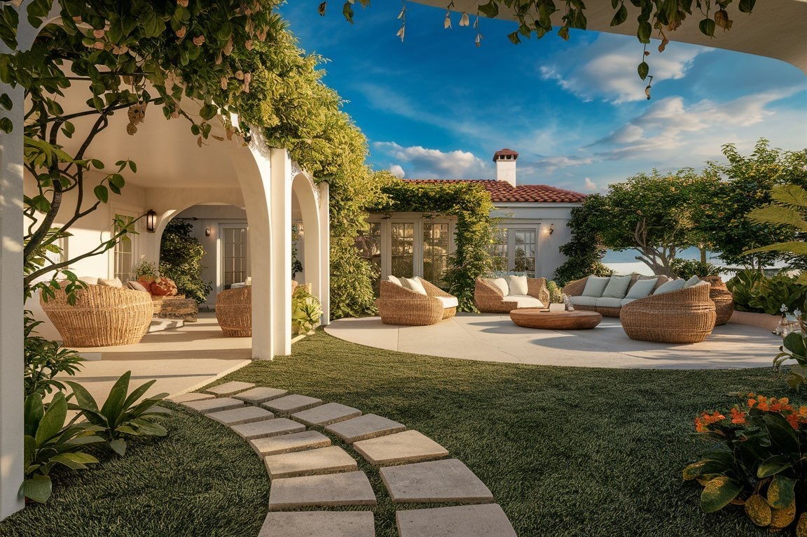
15 Patio Upgrades Worth Trying
Add Personality With DIY Decor
This is really where a patio starts to feel like it belongs to someone specific rather than a catalog page come to life.
Boho lanterns, painted pots, macrame hangers, or a hand-made welcome sign all bring in personality for very little cost.
A little handmade detail goes a long way here. The goal is a patio that feels like an actual reflection of taste, not a showroom display.
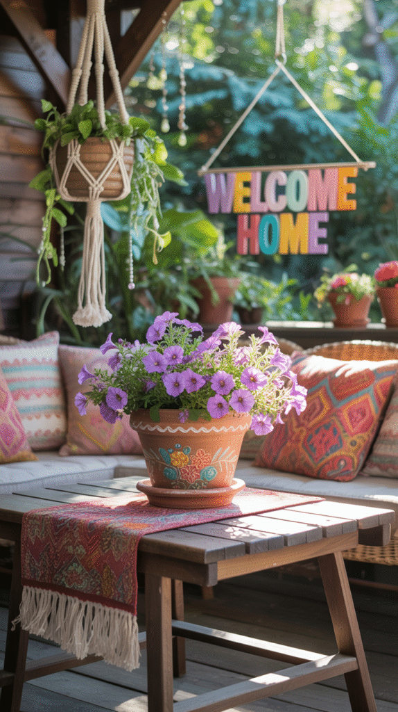
Set Up a Rolling Bar Cart
A rolling bar cart doesn't need to be fancy to set the mood, glassware, a pitcher of something cold, and a few napkins is really the whole formula.
It keeps drinks and supplies within reach without anyone having to make repeated trips back inside for a refill.
Being able to wheel it wherever the gathering actually ends up happening is most of the appeal here.
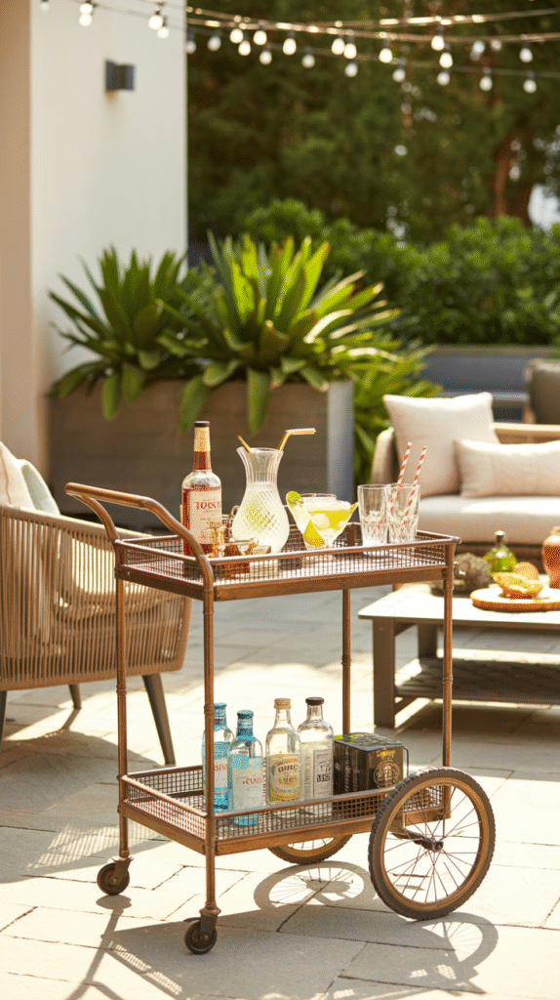
Hang a Chair or Swing
A hanging egg chair or porch swing adds a permanent staycation feeling to a patio almost entirely on its own.
It brings a little movement into an otherwise static space, and it's consistently the piece guests end up commenting on first.
Checking the weight capacity before anyone decides to treat it like a jungle gym is genuinely worth doing in advance.
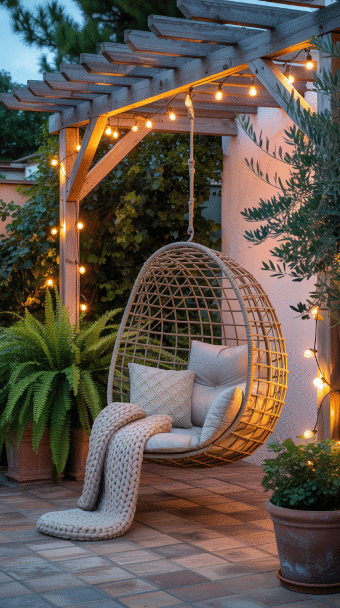
Go Big With Potted Plants
A full garden isn't required to bring real greenery into a patio. A few large, dramatic pots do most of the work entirely on their own.
Tropical palms lean vacation, lavender or rosemary add scent, and a snake plant covers anyone who tends to forget watering duty more often than they'd like to admit.
Grouping the pots in odd numbers and varying their heights gives the whole arrangement a considered, designer-level look without much extra effort.
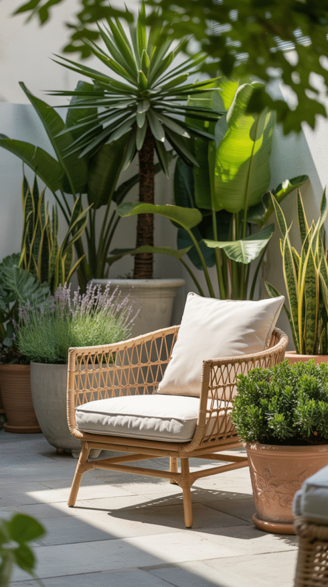
Add a Small Water Feature
A small fountain or bubbler turns a patio into something closer to a spa retreat than an ordinary backyard corner.
The sound masks street noise, sets an instantly calmer tone, and tends to be the detail that actually gets a patio used for unwinding rather than just passing through on the way somewhere else.
It doesn't require a major budget, either, plenty of tabletop versions plug in directly and work just as well as something built-in.
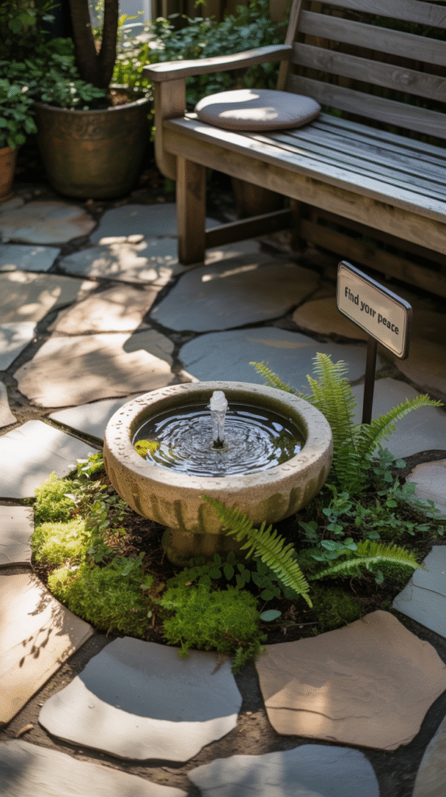
Bring Indoor Textiles Outside
Blankets, cushions, and throws do as much for a patio's comfort level as they do for a living room, just with weather-resistant fabric used instead.
Weather-resistant materials, cushions with removable covers for easy washing, and a few bold patterns keep the look from feeling sterile or overly plain.
Even a basic folding chair reads as genuinely comfortable once the right throw pillow lands on it.
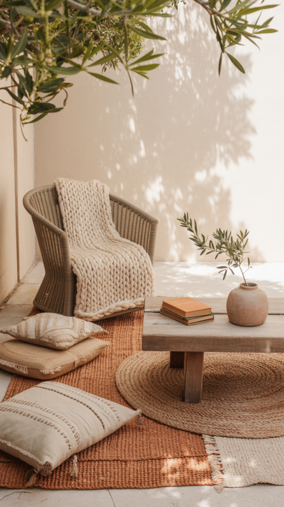
Build in Seating Where Possible
Built-in benches or concrete seating solve more problems than they look like they would at first glance.
They read as custom and polished, they mean never running short on seating for a crowd, and a few cushions make them just as comfortable as any standalone chair out there.
They're an especially strong fit for a smaller patio, since built-ins free up floor space that standalone furniture would otherwise eat into.
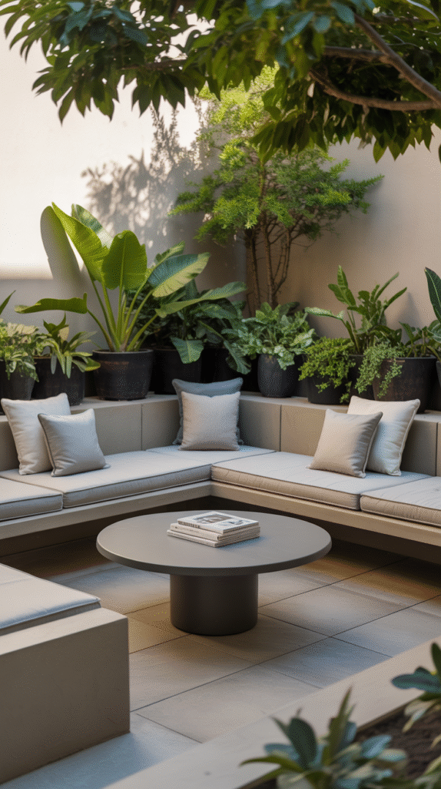
Paint the Patio Floor
A tired, plain concrete slab gets a surprisingly dramatic upgrade from nothing more than a coat of paint.
Geometric stencils, faux tile patterns, or a solid bold color all work here, depending on how much pattern the space can actually handle.
Exterior-grade paint is non-negotiable for this project, anything else tends to start peeling within a week of actual foot traffic and weather exposure.
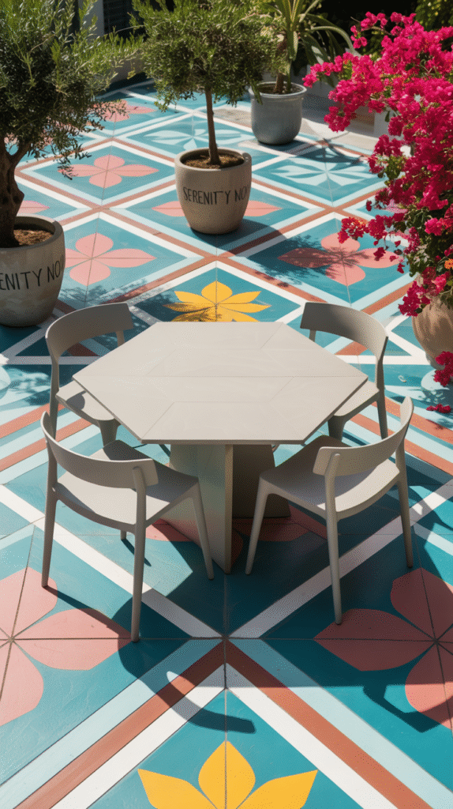
Add Overhead Shade and Structure
A shaded structure over part of the patio does more for the space than almost any other single addition available, it adds real definition and makes the space usable even in direct sun.
It also gives string lights or hanging plants somewhere to actually attach, and creates genuine relief from a blazing afternoon.
A simple fabric canopy works just as well as a full structure for anyone not ready to build something permanent just yet.
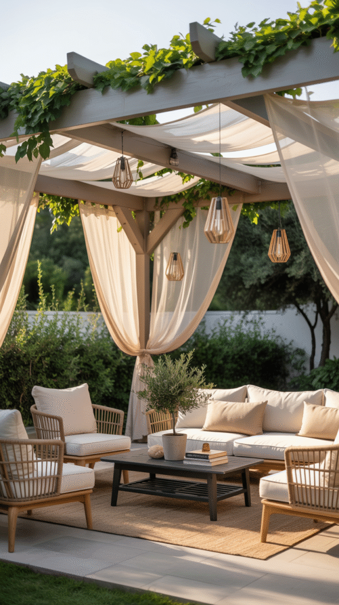
Go Vertical With a Garden Wall
Limited floor space doesn't rule out greenery altogether. A vertical garden solves the problem by moving the plants onto the wall instead of the ground.
Wall-mounted planters or a simple built frame filled with herbs, succulents, or trailing vines turn a blank wall into a genuine feature worth noticing.
It adds real texture and life to the space without taking up a single inch of usable patio floor.
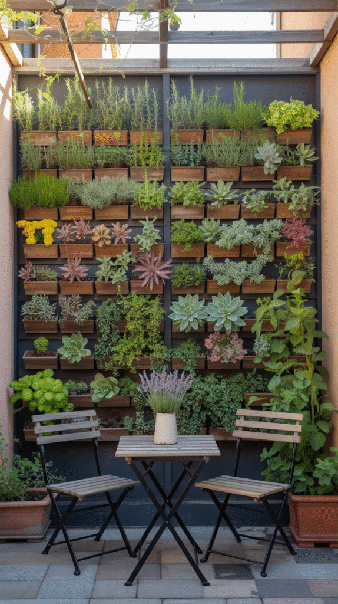
Install Mood Lighting Beyond the Porch Bulb
A single bulb dangling overhead rarely does a patio any favors after dark. Real outdoor lighting changes the whole feel of the space entirely.
String lights draped overhead, lanterns with flameless candles, or solar stake lights lining a path all add warmth without any real installation effort required.
Overhead string lighting in particular gives a patio that soft, celebratory glow usually reserved for an actual outdoor event.
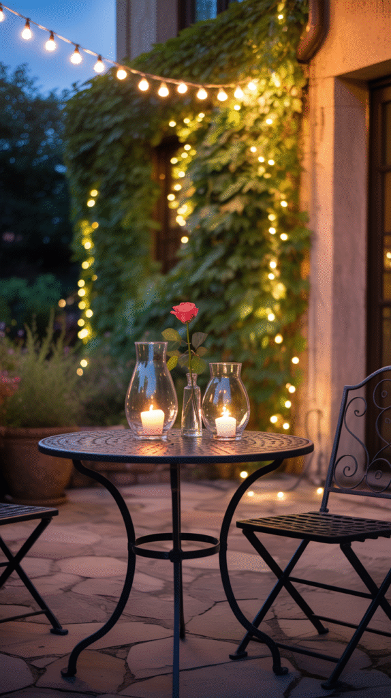
Add a Fire Feature for Evening Ambiance
A fire pit or similar fire feature is one of the most reliable ways to extend how late a patio actually ends up getting used.
It adds literal and figurative warmth, turning a chilly evening into a reason to stay outside rather than head back in for the night.
It becomes the natural centerpiece for late-night conversation almost by default, something simple to gather around works better than something elaborate ever could.
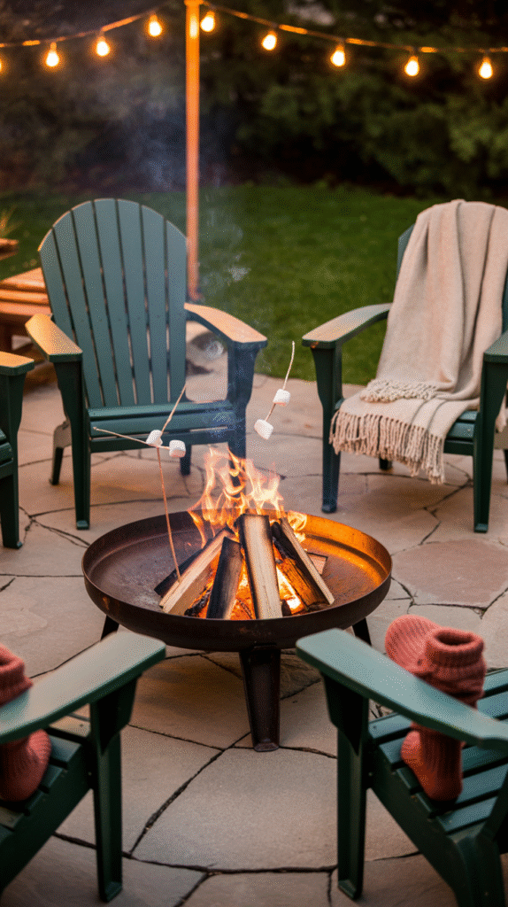
Zone the Space for Lounging and Dining
A patio that feels like a random pile of furniture dumped in one corner usually just needs to be split into clear, defined zones.
An outdoor rug to define each area, a separate lounge setup and dining table, and a bar cart or plant stand marking the boundary between them all genuinely help.
It gives the whole space actual purpose, nobody stands around wondering where to sit once the zones themselves are obvious.
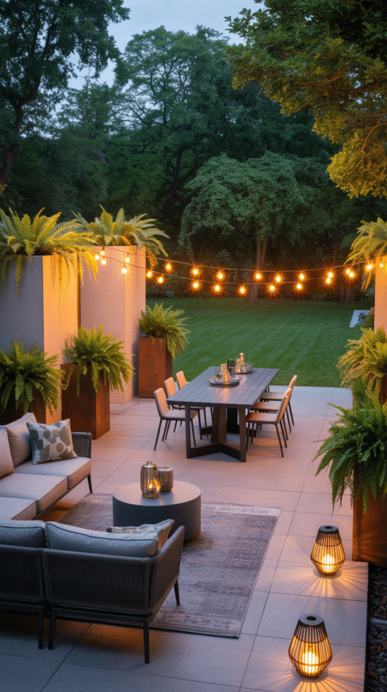
Layer in an Outdoor Rug
An outdoor rug is one of the easiest ways to define a patio and make it feel like an actual room instead of a slab with furniture scattered on it.
It adds color and texture, softens hard flooring underfoot, and ties scattered furniture pieces together into one genuinely cohesive layout.
A bold pattern does double duty here too, it hides dirt and the occasional muddy paw print far better than a plain, light-colored weave ever could.
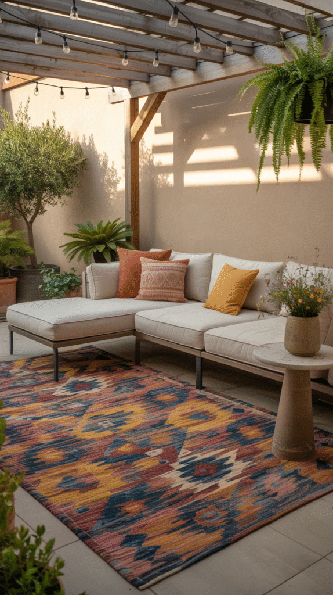
Mix and Match Furniture Instead of Buying a Set
Matchy-matchy patio sets are genuinely on their way out. A space that feels curated rather than showroom-ordered comes from mixing materials and styles on purpose.
A wooden table paired with black metal chairs, wicker seating with bold cushions, or concrete stools next to a boho pouf all read as considered rather than random.
A mismatched look tends to feel more intentional than a matched one, like each piece has its own story instead of all arriving in the same shipping box.
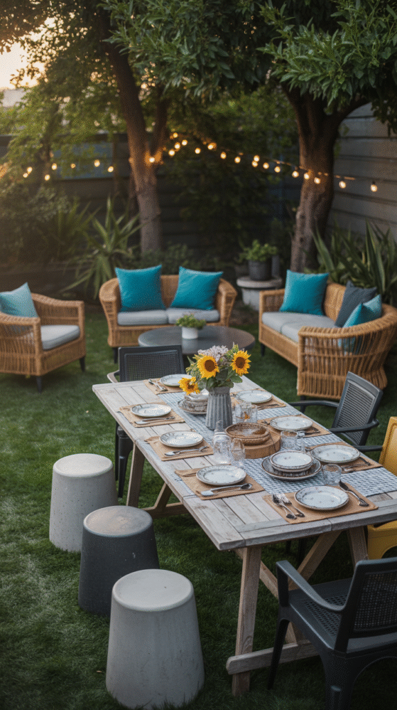
Final Thoughts
Going all out with a shaded structure and a fire feature works, sure, but so does simply tossing down a rug and stringing up some lights, the actual goal is just making the space feel like it genuinely belongs to whoever uses it.
Start with whatever feels most obviously missing, then add the next thing after that. One idea tends to lead naturally into the next, and before long the patio turns into the spot people actually want to be.